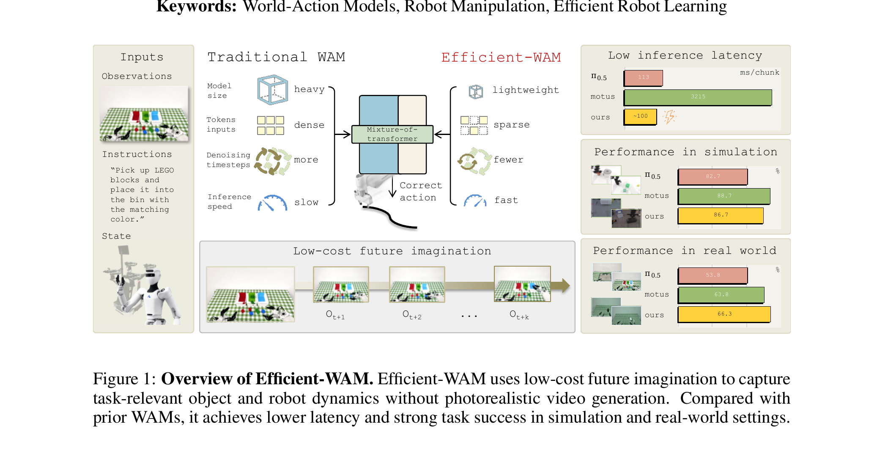
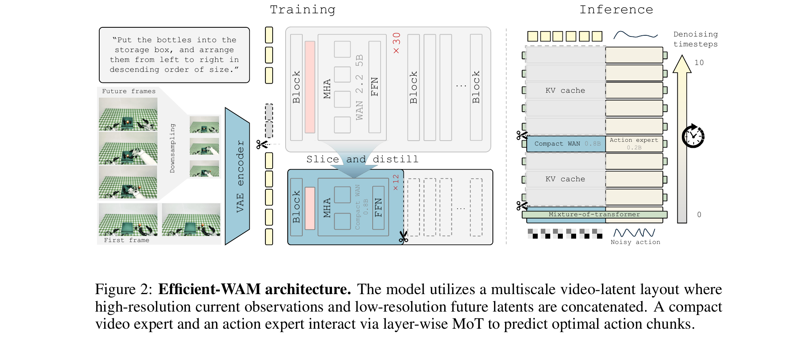
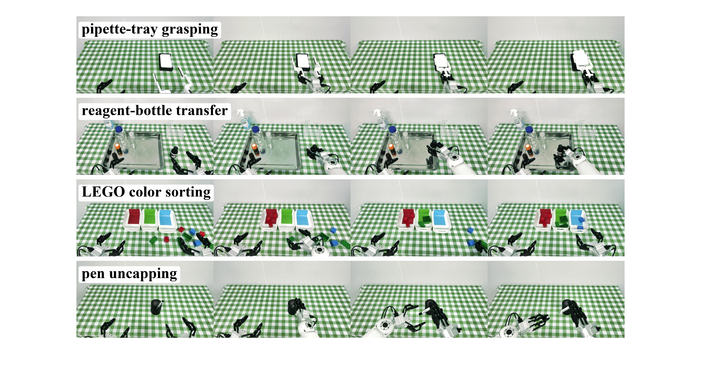
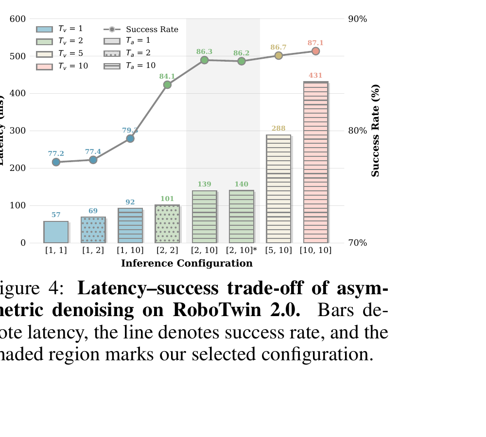

Efficient-WAM：低成本未来想象为何仍能控制
Li 等 · 2026 技术报告 · arXiv:2606.10040 v2 · Zotero ATBAM8EZ · PDF RG6J9NI5
这篇论文把 WAM 的目标从“生成一段好看的未来视频”改成“生成足以指导动作的未来表征”。它不是只做量化或剪层，而是同时压缩三个相乘的成本：视频专家参数量、未来视觉 token 数、视频去噪步数。最终用 0.8B 视频专家 + 0.2B 动作专家，在真机 RTX 4090 上报告 98 ms/chunk；代价是 future 画面刻意变粗，且对微操作是否仍够用尚未验证。
§1 Introduction：为什么 WAM 的“画质竞赛”可能优化错了目标
Flash-WAM 问“怎样把多步采样蒸馏短”，Efficient-WAM 先问更上游的问题：机器人控制真的需要一台 5B/8B 视频生成器把未来纹理画清楚吗？如果 action expert 只依赖物体几何、运动趋势与接触边界，那么大量用于背景纹理和照片级细节的参数、token 与后期去噪步都没有控制收益。
1.1 现有 WAM 的隐含假设
WAM 通过未来预测把物理动态先验注入策略，这一点区别于直接从当前观测回归动作的 VLA。但很多强 WAM 继承大型视频生成器，也继承了生成任务的默认指标：未来越清晰、越逼真，动作应当越好。这个假设把视频生成质量当成控制质量的代理，却没有证明二者单调相关。
1.2 两篇先行工作已经动摇这个假设
Video Prediction Policy 把视频去噪压到单步后仍能生成有效动作；Fast-WAM 更激进，在测试时跳过显式未来生成，把 video DiT 当单次特征编码器。两者说明 future prediction 的价值可能来自训练期学到的动力学表征，而不是测试时的照片级帧。Efficient-WAM 选择中间道路：不删除 future branch，但把它降格成 action-centric guidance。

1.3 为什么不能只靠普通模型压缩
直接把 WAN-2.2-5B 随机缩成 0.8B 会把 Clean/Random 成功率降到 69/68。原因是小模型不只丢掉“画质容量”，也会丢掉几何和动态先验。论文因此把压缩设计成有顺序的因果链：先用 layer slicing 与 teacher distillation 保住世界知识，再降低 future resolution，最后才缩短视频采样；后两个快捷操作建立在第一个已把容量集中到控制相关结构的前提上。
展开原文 · 论文的核心立场
“What the policy truly needs is a future representation that preserves task-relevant geometry, motion tendencies, and contact cues.”
§2 Related Work：三类邻居分别压了哪里
Related Work 的关键不是“作者引用了谁”，而是确定贡献边界。Efficient-WAM 同时邻接 WAM 架构、VLA 推理加速和知识蒸馏，但它要填的是三者交叉处的空白：压缩 WAM 的 video-imagination bottleneck，同时保留对动作有用的世界先验。
| 路线 | 代表工作 | 主要做法 | 与本文的区别 |
|---|---|---|---|
| 重型显式 WAM | UWM、Motus、Cosmos Policy | 联合视频与动作生成，依赖大视频骨干、密集 token、多步去噪 | 本文保留显式 future，但系统性压 video branch 的三个成本维度 |
| 弱化/取消测试时视频 | Being-H0.7、GigaWorld-Policy、Fast-WAM | 改用 latent dynamics、因果 reasoning 或直接跳过 explicit imagination | 本文认为粗 future 仍有价值，因此保留一个轻量显式中间状态 |
| VLA/策略加速 | DeeR-VLA、DySL-VLA、token compression、one-step policy | 动态跳层、压视觉 token 或压动作采样 | 主要优化 policy/action sampler；本文专门优化 WAM 的 future-video bottleneck |
| 通用压缩 | KD、TinyBERT、structured dropout/pruning | 让小学生逼近大 teacher | 本文不要求复刻 teacher 画质，只转移隐藏状态与时间运动中对控制有用的先验 |
只用 Fast-WAM 会失去可见 future；只用模型剪枝会把物理先验一起剪掉；只做单步动作蒸馏则没触及视频专家。Efficient-WAM 的研究问题是：能否保留一个显式但廉价的 future channel，并证明它在真机细粒度/长程任务上仍比纯直接 VLA 有用。
§3 形式化：未来 latent 是中间变量，不是最终产品
作者没有删除 WAM 的两阶段因果结构。模型仍先从观测和语言得到未来视觉 latent，再让动作条件于这个 latent。改变的是评价 $z_v$ 的标准：它只需保留能提高 $p_\theta(a\mid z_v)$ 的信息，不需要让人眼觉得逼真。
- $o,l,s$
- 当前多视角观测、语言指令和机器人本体状态。
- $z_v$
- 显式未来视频 latent。它是动作专家的条件变量，而不是面向用户的最终视频产品。
- $a_{1:H}$
- 长度 $H=16$ 的闭环 action chunk；执行后重新观测并生成下一个 chunk。
- 因果顺序
- 先预测 $z_v$，再生成条件于它的动作。因此 video branch 的延迟直接进入控制回路。
- $M_v$
- 活跃视频专家的参数规模。5B teacher 被切片/蒸馏为约 0.8B。
- $N^v_{tok}(r_v)$
- 由 future resolution $r_v$ 决定的视觉 token 数；高/中/低设置约为 240/126/60。
- $K_v$
- 视频 denoising steps。运行时从 10 降到 2，而动作仍保留 10 步。
- 为什么写成函数而非简单乘积
- attention、KV cache、硬件 kernel 与固定开销会让延迟不严格按三者乘法缩放；公式强调设计维度，不声称解析 FLOPs。
§4 三个效率杠杆：先保世界知识，再压 token，最后停掉多余视频去噪
三个杠杆不是彼此无关的优化清单。结构化迁移先让 0.8B 视频专家保住几何与动态；因此 future token 才能降到 1/4；因为视频只输出粗 guidance，采样又可以在 2 步停止，把后续计算留给精确动作。

1. 当前清晰，未来可以粗
高分辨率当前观测提供精确位置；低分辨率 future 只承担运动方向与接触趋势。
输入是什么：相机图像或视频，加上任务指令和机器人当前状态。它们还是原始观测，模型尚未把它们变成可用于预测或控制的特征。
这一步究竟做什么：本步骤执行“当前清晰，未来可以粗”。具体来说，高分辨率当前观测提供精确位置；低分辨率 future 只承担运动方向与接触趋势。 这里处理的只是整条链路中的一个接口：把上一步的结果整理成下一步能够正确读取和继续计算的形式。
输出到哪里：经过本步骤处理、含义更明确的中间结果。这个结果会交给下一步“从 teacher 结构化取样”继续处理。
为什么不能省略：它把未经处理的原始问题变成后续模块可以计算的输入，是整条链路的起点。
2. 从 teacher 结构化取样
抽取第 [1,2,4,6,8,11,14,17,20,23,26,30] 层，并沿宽度抽 head 与 FFN channel。
输入是什么：来自上一步“当前清晰，未来可以粗”的产物：经过本步骤处理、含义更明确的中间结果。本步骤还会按论文设置读取当前条件、时间步或训练信号。
这一步究竟做什么：抽取第 [1,2,4,6,8,11,14,17,20,23,26,30] 层，并沿宽度抽 head 与 FFN channel。
输出到哪里：经过本步骤处理、含义更明确的中间结果。这个结果会交给下一步“蒸馏恢复世界知识”继续处理。
为什么不能省略：它承担上下两步之间的接口；缺少它，前一步产生的信息无法以正确格式或正确含义传到下一步。
3. 蒸馏恢复世界知识
隐藏状态对齐保语义结构，帧间 delta 对齐保运动趋势，GT video flow matching 防止只模仿 teacher 中间层。
输入是什么：来自上一步“从 teacher 结构化取样”的产物：经过本步骤处理、含义更明确的中间结果。本步骤还会按论文设置读取当前条件、时间步或训练信号。
这一步究竟做什么：隐藏状态对齐保语义结构，帧间 delta 对齐保运动趋势，GT video flow matching 防止只模仿 teacher 中间层。
输出到哪里：参数得到更新的模型，或能供下一轮训练使用的新监督信号。这个结果会交给下一步“动作逐层读取未来上下文”继续处理。
为什么不能省略：前面的数据或分数本身不会自动改变模型；必须通过损失函数把误差信号变成参数更新。
4. 动作逐层读取未来上下文
视频和动作各有专家，但通过 layer-wise MoT 交互，不是最后才拼接一次特征。
输入是什么：来自上一步“蒸馏恢复世界知识”的产物：参数得到更新的模型，或能供下一轮训练使用的新监督信号。本步骤还会按论文设置读取当前条件、时间步或训练信号。
这一步究竟做什么：本步骤执行“动作逐层读取未来上下文”。具体来说，视频和动作各有专家，但通过 layer-wise MoT 交互，不是最后才拼接一次特征。 这个动作会真正改变环境，所以系统还要读取执行后的新观测，检查模型预期与现实之间的差距。
输出到哪里：一组比原始输入更紧凑的内部特征；它不是最终动作或画面。这个结果会交给下一步“视频 2 步停，动作继续到 10 步”继续处理。
为什么不能省略：它承担上下两步之间的接口；缺少它，前一步产生的信息无法以正确格式或正确含义传到下一步。
5. 视频 2 步停，动作继续到 10 步
粗结构早期出现后缓存视频特征，把剩余时延预算用于动作精修。
输入是什么：来自上一步“动作逐层读取未来上下文”的产物：一组比原始输入更紧凑的内部特征；它不是最终动作或画面。本步骤还会按论文设置读取当前条件、时间步或训练信号。
这一步究竟做什么：本步骤执行“视频 2 步停，动作继续到 10 步”。具体来说，粗结构早期出现后缓存视频特征，把剩余时延预算用于动作精修。 系统记录中间计算及其对应时刻，需要时直接读取；当输入变化太大时重新计算，避免缓存误差不断累积。
输出到哪里：一组比原始输入更紧凑的内部特征；它不是最终动作或画面。这是图中这条链路的最终产物，随后会进入真实执行、模型更新或指标评测。
为什么不能省略：它把前面得到的内部结果落实为可执行动作、可训练模型或可解释指标，完成从方法到结果的最后一步。
4.1 多尺度 latent 到底省了什么
当前观测以 384×320 编码，未来帧先下采样到 192×160 再送 VAE。两者 patchify 后拼成统一 visual context。future token 从 240 降到 60，不只是 VAE 输入少四倍；在 attention 中，它还减少 video self-attention 与 action-to-video 交互的 key/value 长度。
4.2 非对称 denoising 不是 Flash-WAM 式蒸馏
Efficient-WAM 的运行时配置写作 $[T_v,T_a]$。选择 $[2,10]$ 时，video expert 只在最初两步更新，之后复用缓存视频特征；action expert 继续十步。该机制 training-free，不把视频学生蒸成一步 consistency model。它依赖“动作相关结构在前几步已出现”的经验，而 Flash-WAM 通过蒸馏显式学习少步映射。
§5 三阶段训练：先造小世界模型，再训动作，最后联合收口
剪出 0.8B 网络不等于得到可用 world prior。论文用三阶段训练避免两个问题：动作梯度过早破坏视频先验，以及蒸馏目标长期压制真实数据上的 Flow Matching。
- $x_0$
- 与目标同形状的高斯噪声。
- $x_1$
- 可以是 clean future video latent，也可以是 clean action chunk。
- $c$
- 视频侧条件是当前观测与语言；动作侧还读取机器人状态和 future latent。
- $u_t$
- 直线 probability path 的目标速度。视频与动作各预测自己的速度场。
5.1 Stage 1：只训练视频专家，并让 teacher guidance 逐渐退出
- $\tilde h_{s,n},\tilde h_{t,n}$
- 学生与 teacher 在对齐层、视觉 token $n$ 上投影到 256 维的隐藏状态；cosine loss 保方向而不强迫幅值相同。
- $\Delta h_f=h_{f+1}-h_f$
- 先对每帧空间 token 求平均，再取相邻帧差；它专门蒸馏运动趋势，而非静态外观。
- $\tau(l)$
- 学生层到被切片 teacher 层的映射。
- 互补性
- $L_{hid}$ 保几何/语义结构，$L_{mot}$ 保时间变化；只有前者可能得到每帧都相似但不会动的表示。
- $\mathcal L_{video-FM}$
- 始终以真实 future latent 的速度场为主目标，防止学生只会复制 teacher feature。
- $\lambda_{dist}$
- 早期帮助被切片学生恢复稳定先验，后期归零让它适应机器人数据与 action-centric future，而非继续追求 5B 画质。
- 训练配置
- Stage 1 batch 16×8，LR $5\times10^{-5}$；AdamW、cosine schedule、bf16、weight decay $10^{-3}$。
5.2 Stage 2/3：先冻结视频训动作，再小学习率联合微调
- $t_a,t_v$
- 独立采样。动作和视频 token 在同一 MoT forward 中交互，但各自可处于不同噪声程度。
- Stage 2
- 冻结视频，仅训练动作；action weight 1.0，video weight 0.01，避免动作学习破坏刚恢复的 world prior。
- Stage 3
- 两专家联合更新；视频 LR $10^{-5}$，动作 LR $5\times10^{-5}$，仍用 0.01/1.0 的视频/动作损失比。
- 任务策略
- 仿真训练一个 50-task policy；真机每个任务单独训练一个 policy，因此真机结果不证明单模型跨任务泛化。
§6 实验：强控制、98 ms 与“同硬件公平比较”要分开读
RoboTwin 主表回答小模型是否有能力上限，Astribot 真机回答低延迟版本是否能闭环工作，消融才回答性能来自哪一个压缩杠杆。不同表使用 A800、RTX 4090 和不同 rollout 数，不能把所有 latency 直接拼成严格 Pareto。
6.1 RoboTwin 2.0：1B baseline 接近 8B Motus，RT 版再换速度
训练数据包含 2,500 条 Clean 与 25,000 条 Randomized demonstrations；主评测在 50 个任务、每任务每设置 100 trials。Efficient-WAM 保留高分辨率 future 和对称去噪，用来隔离小架构能力；Efficient-WAM-RT 再叠加低分辨率与非对称去噪。
| 方法 | 类型 | Clean | Random | 参数 |
|---|---|---|---|---|
| π0.5 | VLA | 82.7 | 76.8 | 3.3B |
| LingBot-VLA | VLA | 86.5 | 85.3 | 4B |
| GigaWorld-Policy | WAM | 86.4 | 85.0 | 5B |
| Motus | WAM | 88.7 | 87.0 | 8B |
| Efficient-WAM | WAM | 86.7 | 85.7 | 1B |
| Efficient-WAM-RT | WAM | 83.1 | 82.0 |
可支持：结构切片+蒸馏的 1B WAM 能达到 5B GigaWorld-Policy 附近，并只比 8B Motus 低 2 点 Clean。不能支持：RT 版本“没有性能代价”；它比 baseline 低 3.6/3.7 点，只是仍高于若干 VLA。
6.2 Astribot S1：真正拉开差距的是复杂任务与反应速度

| 任务 | π0.5 | Motus | Efficient-WAM-RT |
|---|---|---|---|
| Pipette-tray grasping | 100 | 85 | 95 |
| Reagent-bottle transfer | 75 | 80 | 75 |
| LEGO color sorting | 30 | 65 | 65 |
| Pen uncapping | 10 | 25 | 30 |
| 平均成功率 | 53.75 | 63.75 | 66.25 |
| Latency/chunk | 113 ms | 3215 ms | 98 ms |
直接 VLA π0.5 在简单抓取最好，却在 LEGO sorting 与开笔帽上显著落后两种 WAM，支持 future/world prior 对语义长程和双手协调有价值。Efficient-WAM 比 Motus 快约 32.8×，平均成功率略高 2.5 点。但每任务 20 trials 意味着 5 个百分点只是一回成功；66.25 vs 63.75 不足以证明统计显著优于 Motus，最可靠结论是性能同量级而延迟大幅更低。
展开原文 · 作者对 98 ms 的部署口径
“This complete, hardware-optimized implementation breaks the 100 ms barrier, driving physical task latency to just 98 ms per action chunk.”
§7 消融：三个杠杆各自贡献什么，哪些对比仍不够严格
这一节才真正检验“粗 future 足够”。消融统一在 RoboTwin 50 tasks、每任务 20 rollouts，绝对值会与 100-rollout 主表有小差异。阅读时看同表内相对变化，不要把 87 与主表 86.7 当作额外提升。
7.1 小模型不能随机训：world-knowledge transfer 是第一道门
| Video expert | 初始化 | 蒸馏 | Clean/Rand | 参数 | 延迟 |
|---|---|---|---|---|---|
| Full WAN | Full | — | 86.4 / 85.5 | 5B | 2013 ms |
| Compact-random | Random | No | 69 / 68 | 0.8B | 432 ms |
| Compact-sliced | Sliced | No | 82 / 81 | 0.8B | 426 ms |
| Efficient-WAM | Sliced | Yes | 87 / 86 | 0.8B | 430 ms |
随机小模型比 teacher 低约 17 点；只做 slicing 已恢复 13 点；hidden+motion distillation 再恢复约 5 点并达到 teacher 水平。延迟在三种 0.8B 变体间几乎相同，说明性能收益不是更多计算换来的。
7.2 future token 从 240 到 60：速度收益温和，性能也温和下降
| Future resolution | Tokens | Clean | Rand | 延迟 |
|---|---|---|---|---|
| High | 240 | 87 | 86 | 430 ms |
| Medium | 126 | 85 | 84 | 396 ms |
| Low | 60 | 83 | 82 | 377 ms |
token 减到四分之一只把延迟从 430 降到 377 ms，因为模型权重、动作分支和多步调度仍占成本；性能也下降 4 点。它支持“可以用粗 future”，但不支持“分辨率完全无关”。
7.3 非对称步数是最大运行时杠杆

视频 2→10 步只多约 0.8 点，却增加约 292 ms；动作 2→10 步在视频固定 2 步时多约 2.2 点，只增加 38 ms。动作精修的单位延迟收益更高。
没有在 full 5B teacher 上做同样 $[2,10]$ 扫描，因此“pruning 使早停更可靠”这一三模块协同叙事尚未与“任何 WAM 都能视频早停”完全区分。
§8 与 Flash/Fast-WAM 的位置、局限和最小复现
Flash-WAM 压缩“步”，Fast-WAM 取消测试时显式 future，Efficient-WAM 则保留粗 future 并同时压“模型 × token × 视频步数”。它的价值在于工程折中，不在于证明越粗越好。
| 方法 | 测试时显式 future | 主要效率手段 | 保留/牺牲 |
|---|---|---|---|
| Flash-WAM | 保留 | 模态感知 consistency distillation 到 1–2 步 | 保留原骨干；每一步仍重 |
| Fast-WAM | 跳过 | video DiT 变一次 action encoder | 速度最直接；失去可见 future |
| Efficient-WAM | 保留但粗糙 | 0.8B expert + 60 future tokens + $[2,10]$ | 保留动态 guidance；牺牲画质与部分成功率 |
8.1 论文自己承认的两个边界
- 精细任务：thread insertion 等像素级微操作可能仍需要高分辨率 future；现有四个真机任务还不足以排除。
- 固定 schedule：当前一直使用 $[2,10]$，无论场景是否简单或不确定。更合理的下一步是按风险动态增加视频步。
8.2 我认为还需补的四个证据
- 用同一 RTX 4090、同一精度与 batch 对 π0.5、Motus、本文重测 latency，避免实现差异。
- 加入 no-future、random-future 和 GT-future 对照，测粗 future 到底贡献了多少，而不是仅与外部 Fast-WAM 比。
- 报告视频质量指标与任务成功率的相关性，直接检验“photorealism 不是好代理指标”。
- 在同一个多任务真机 policy 上评测；当前每任务独立策略无法证明跨任务 foundation-model 泛化。
8.3 最小复现顺序
- 先复现 Full WAN 5B 的 2013 ms 与 86.4/85.5，固定 A800、precision、action horizon 16。
- 按论文指定 12 个 teacher layer 和 width channel 做 slicing，验证 random→sliced 的 13 点恢复。
- 单独加入 $L_{hid}$、$L_{mot}$ 再合并，记录视频 Flow Matching 与动作成功率，确认不是某一个 loss 独占收益。
- 保持高分辨率/对称步数训练 1B baseline，再依次只改 resolution、只改 schedule，最后组合 RT。
- 对每个 $[T_v,T_a]$ 同时记录 video/action 实际 forward 次数、KV cache 命中、wall-clock、显存和成功率。
- 真机把 20 次 rollout 的原始成功数、失败类型和 sensor-to-action 延迟全部保留，不只报平均百分比。
论文强有力地证明了“大视频生成器不是 WAM 控制收益的必要条件”：结构化迁移后的 0.8B video expert 接近 5B teacher，视频只跑 2 步也几乎不掉成功率。但它尚未证明“显式粗 future 本身不可替代”，因为缺少同架构 no-future 控制组；也未证明细粒度接触任务不需要更高分辨率。